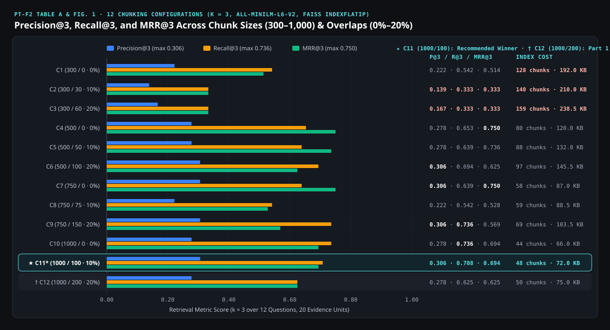
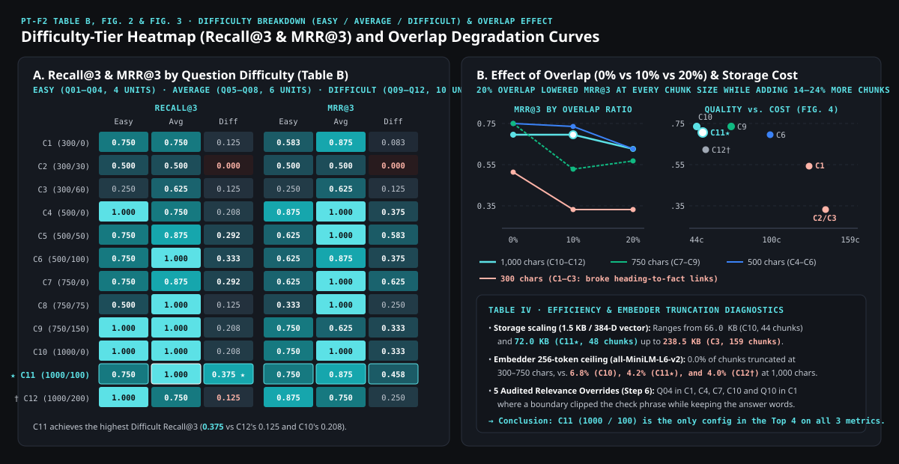
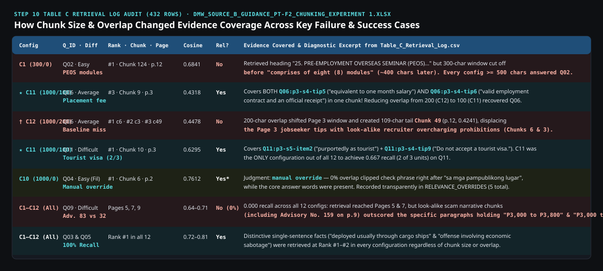

PT-F2: Experimenting to Determine the Best Chunk Size and Overlap
Chunk size mattered more than overlap: 300-character chunks severed headings from facts, 20% overlap lowered ranking quality at every size, and 1,000-character chunks with 100-character overlap (C11) outperformed the Part 1 baseline across all three retrieval metrics.
- Experiment
- 12 configs (C1–C12) · 432 retrieval rows
- Grid
- Sizes 300, 500, 750, 1,000 · Overlaps 0%, 10%, 20%
- Benchmark
- 12 questions (E / A / D) · 20 evidence units
- Recommended
- C11 (1,000 / 100 · 48 chunks · 72.0 KB)
Summary
Conducted a controlled 12-configuration retrieval experiment over the 12-page bilingual DMW/POEA anti-illegal recruitment compilation (95 passages, 25 sections), crossing chunk sizes of 300, 500, 750, and 1,000 characters with relative overlaps of 0%, 10%, and 20% in newly built FAISS IndexFlatIP stores using all-MiniLM-L6-v2 embeddings. Evaluated across 12 verified questions (20 evidence units) using Precision@3, Recall@3, MRR@3, and efficiency benchmarks, identifying C11 (1,000-character chunks, 100-character overlap) as the most balanced configuration—surpassing the Part 1 baseline (1,000/200) on every metric while indexing fewer chunks.
- Recommended config (C11) 1,000 / 100 48 chunks (72.0 KB) · Top 4 on all 3 metrics
- Recall@3 vs. baseline 0.625 → 0.708 C12 (1000/200) vs C11 (1000/100) · Peak 0.736
- MRR@3 vs. baseline 0.625 → 0.694 C12 vs C11 · 20% overlap hurt MRR@3 at every size
- Difficult Recall@3 0.125 → 0.375 3× gain over C12 baseline on multi-passage queries
Approach
Following Part 1 (PT-F1), which built the full RAG pipeline using a baseline of 1,000-character chunks and 200-character overlap (C12), this Part 2 study isolates the retrieval layer to test whether smaller chunk sizes or different overlap ratios retrieve the required legal evidence more effectively for the same 12-page dmw_source_b_guidance.pdf compilation.
- Controlled Experimental Grid (Steps 1–5): Everything except chunk size and overlap was held strictly constant: the extracted page text, the page-scoped
create_chunks()function, thesentence-transformers/all-MiniLM-L6-v2embedder on CPU (384 dimensions, 256-token input limit), unit L2 normalization, exact inner-product search infaiss.IndexFlatIP(384), andTOP_K = 3. Crossing four chunk sizes (300,500,750,1,000characters) with three relative overlap ratios (0%,10%,20%) generated 12 configurations (C1–C12), where each configuration received a freshly built FAISS index and searched with the exact same pre-computed query vectors. - Ground-Truth Evidence Units & Audited Relevance Rule (Steps 6–7): The 12 verified questions from Part 1 (4 Easy, 4 Average, 4 Difficult) require 20 distinct evidence units in total (4 Easy units, 6 Average units, 10 Difficult units). Each unit specifies its source page and an exact check phrase (validated via
find_in_pdf()andMin_Span_Chars). A retrieved chunk covers a unit only if it originates from that page and contains the complete normalized check phrase—preventing look-alike scam advisories or mere keyword mentions from counting as hits. Auditing all 432 retrieved rows identified 5 chunks where a boundary cut the check phrase while leaving the answer-bearing words intact (Q04in C1, C4, C7, C10;Q10in C1); these were recorded transparently inRELEVANCE_OVERRIDES. - Quality & Efficiency Evaluation (Steps 8–11): Because
Precision@3,Recall@3, andMRR@3evaluate retrieval directly, the language model was not invoked. For each configuration, the notebook logged overall metrics (Table A), difficulty-tier breakdowns (Table B), all 432 chunk judgments (Table C), and efficiency indicators: total chunks, serialized index size in KB, embedding time, search latency, and the percentage of chunks exceeding MiniLM's 256-token truncation limit.
- Evidence unit & check phrase
- A single required passage verified by its page number and the exact answer-bearing wording from the PDF, ensuring multi-hop questions are scored on every fact they need rather than topic similarity.
- Precision@3 & Recall@3
- Precision@3 measures the share of the three retrieved chunks that are relevant; Recall@3 measures the share of a question's required evidence units covered across the top three chunks.
- Mean Reciprocal Rank (MRR@3)
- Rewards configurations that place the first relevant chunk at Rank #1 (score 1.0) rather than Rank #2 (0.5) or Rank #3 (0.333), averaged across all 12 questions.
- Embedder 256-token ceiling
- The maximum sub-word sequence length read by
all-MiniLM-L6-v2; any text beyond 256 tokens in a long chunk is truncated before embedding and becomes invisible to vector search.
Results
Across the 12 configurations, chunk size drove retrieval quality far more than overlap. The 300-character configurations (C1–C3) were the weakest on every metric, while C11 (1,000 / 100, 10% overlap) was the only configuration to rank in the top four across Precision@3, Recall@3, and MRR@3 simultaneously.
| Config · Size / Overlap | Chunks | Recall@3 (Share of 20 Evidence Units Covered) |
|---|---|---|
| C1 · 300 / 0 (0%) | 128 | |
| C2 · 300 / 30 (10%) | 140 | |
| C3 · 300 / 60 (20%) | 159 | |
| C4 · 500 / 0 (0%) | 80 | |
| C5 · 500 / 50 (10%) | 88 | |
| C6 · 500 / 100 (20%) | 97 | |
| C7 · 750 / 0 (0%) | 58 | |
| C8 · 750 / 75 (10%) | 59 | |
| C9 · 750 / 150 (20%) | 69 | |
| C10 · 1000 / 0 (0%) | 44 | |
| C11* · 1000 / 100 (10%) Recommended | 48 | |
| C12† · 1000 / 200 (20% · Part 1 Baseline) | 50 |
Table A & Table IV: Configuration-level retrieval quality and efficiency
| Config | Size | Overlap | Chunks | Index (KB) | P@3 | R@3 | MRR@3 | Embed (s) | > 256 tok. | Role / Finding |
|---|---|---|---|---|---|---|---|---|---|---|
| C1 | 300 | 0 (0%) | 128 | 192.0 | 0.222 | 0.542 | 0.514 | 0.626 | 0.0% | Fragmented headings from facts (missed Q02) |
| C2 | 300 | 30 (10%) | 140 | 210.0 | 0.139 | 0.333 | 0.333 | 0.759 | 0.0% | 0.000 Difficult recall; worst overall P@3 |
| C3 | 300 | 60 (20%) | 159 | 238.5 | 0.167 | 0.333 | 0.333 | 0.742 | 0.0% | Largest index (238.5 KB), tied lowest R@3 & MRR@3 |
| C4 | 500 | 0 (0%) | 80 | 120.0 | 0.278 | 0.653 | 0.750 | 0.699 | 0.0% | Tied highest MRR@3; 1.000 Easy recall |
| C5 | 500 | 50 (10%) | 88 | 132.0 | 0.278 | 0.639 | 0.736 | 0.711 | 0.0% | Strong ranking (0.736 MRR@3) |
| C6 | 500 | 100 (20%) | 97 | 145.5 | 0.306 | 0.694 | 0.625 | 0.957 | 0.0% | 2nd best Difficult recall (0.333), slower embed |
| C7 | 750 | 0 (0%) | 58 | 87.0 | 0.306 | 0.639 | 0.750 | 0.846 | 0.0% | Tied best P@3 & MRR@3; best Difficult MRR@3 (0.625) |
| C8 | 750 | 75 (10%) | 59 | 88.5 | 0.222 | 0.542 | 0.528 | 0.768 | 0.0% | Matched C1 quality with 54% fewer chunks |
| C9 | 750 | 150 (20%) | 69 | 103.5 | 0.306 | 0.736 | 0.569 | 0.888 | 0.0% | Tied best R@3, but 8th in MRR@3 (lower ranks) |
| C10 | 1000 | 0 (0%) | 44 | 66.0 | 0.278 | 0.736 | 0.694 | 0.603 | 6.8% | Smallest index & tied best R@3, but weak Difficult R@3 (0.208) |
| C11* | 1000 | 100 (10%) | 48 | 72.0 | 0.306 | 0.708 | 0.694 | 0.678 | 4.2% | Best balanced & top Difficult R@3 (0.375) Best |
| C12† | 1000 | 200 (20%) | 50 | 75.0 | 0.278 | 0.625 | 0.625 | 0.696 | 4.0% | Part 1 baseline; trailed C11 on all 3 metrics Baseline |
Table B: Retrieval performance by question difficulty
| Config (Size / Overlap) | Easy R@3 | Avg R@3 | Diff R@3 | Easy MRR@3 | Avg MRR@3 | Diff MRR@3 | Difficulty Breakdown Diagnosis |
|---|---|---|---|---|---|---|---|
| C1 (300 / 0) | 0.750 | 0.750 | 0.125 | 0.583 | 0.875 | 0.083 | Best of the 300-char group, but missed Q02 & failed multi-hop |
| C2 (300 / 30) | 0.500 | 0.500 | 0.000 | 0.500 | 0.500 | 0.000 | Zero Difficult units retrieved |
| C3 (300 / 60) | 0.250 | 0.625 | 0.125 | 0.250 | 0.625 | 0.125 | Easy recall collapsed to 0.250 due to duplicate overlap slots |
| C4 (500 / 0) | 1.000 | 0.750 | 0.208 | 0.875 | 1.000 | 0.375 | Full Easy recall & Rank #1 on all Average questions |
| C5 (500 / 50) | 0.750 | 0.875 | 0.292 | 0.625 | 1.000 | 0.583 | Improved Average & Difficult recall over C4, missed Q04 |
| C6 (500 / 100) | 0.750 | 1.000 | 0.333 | 0.625 | 0.875 | 0.375 | Full Average recall; 2nd highest Difficult recall (0.333) |
| C7 (750 / 0) | 0.750 | 0.875 | 0.292 | 0.625 | 1.000 | 0.625 | Highest Difficult MRR@3 (0.625) |
| C8 (750 / 75) | 0.500 | 1.000 | 0.125 | 0.333 | 1.000 | 0.250 | 1.000 Average recall, but dipped on Easy & Difficult |
| C9 (750 / 150) | 1.000 | 1.000 | 0.208 | 0.750 | 0.625 | 0.333 | 1.000 on both Easy & Average recall; lower Average MRR@3 |
| C10 (1000 / 0) | 1.000 | 1.000 | 0.208 | 0.750 | 1.000 | 0.333 | Full Easy & Average recall, but 0% overlap hurt Difficult recall |
| C11* (1000 / 100) | 0.750 | 1.000 | 0.375 | 0.750 | 0.875 | 0.458 | 1.000 Average R@3 & highest Difficult R@3 (0.375) Winner |
| C12† (1000 / 200) | 1.000 | 0.750 | 0.125 | 0.875 | 0.750 | 0.250 | Part 1 baseline: missed Q06 (Average) and 87.5% of Difficult units |
Why C11 (1000 / 100) beat both the C12 baseline and C10 (1000 / 0)
C11 (1000 / 100) vs. Part 1 Baseline C12 (1000 / 200)
Reducing overlap from 200 characters (20%) to 100 characters (10%) raised Precision@3 from 0.278 to 0.306, Recall@3 from 0.625 to 0.708, and MRR@3 from 0.625 to 0.694 while indexing two fewer chunks (48 vs. 50). Crucially, C11 recovered both placement-fee tips on Q06 (which C12 missed entirely) and tripled Difficult-question recall from 0.125 to 0.375.
C11 (1000 / 100) vs. Zero-Overlap C10 (1000 / 0)
Although C10 used four fewer chunks (44 vs. 48) and retrieved the Filipino question Q04 via a boundary override, removing overlap entirely caused Difficult-question recall to drop from C11's 0.375 down to 0.208. C11 was the only configuration in the entire study to retrieve two of the three required passages on Q11 (the Tourist–Worker Scheme).
Experiment charts & Table C retrieval log captures


Precision@3, Recall@3, and MRR@3 alongside index chunk count and storage size across C1–C12.

0.40 everywhere, peaking at 0.375 in C11. Right: 20% overlap lowers MRR@3 at every chunk size while adding 14–24% more chunks.

C1's 300-char heading split on Q02, C11's recovery of Q06 and Q11, the 5 boundary overrides, and the universal look-alike failure on Q09.What I learned
Working through the PT-F2 experiment notebook taught me how to turn chunking from guesswork into a controlled scientific test. In Part 1 we only saw how one baseline configuration behaved, so in Part 2 I learned why every other variable had to be locked down: extracting the 12 PDF pages once, encoding the 12 test questions into query vectors a single time, keeping the embedding model and retrieval depth fixed at three chunks, and building a brand-new FAISS index from scratch for each of the 12 configurations. Defining overlap as a percentage of chunk size rather than a fixed number of characters was another important concept, because it let us compare small and large chunks at the exact same relative overlap. Just as importantly, setting up the ground truth around 20 verifiable evidence units—each requiring both the correct source page and an exact check phrase cleaned for Unicode quotes, case, and spacing—showed me how automated scoring avoids rewarding chunks that merely mention a related topic or a look-alike scam. Auditing all 432 retrieval rows in Table C also taught me how boundary cuts interact with strict phrase matching: when five chunks contained the actual answer right at the edge of a window but clipped the end of the check phrase, recording transparent manual overrides with written justifications kept the evaluation fair and reproducible across every configuration.
The second major group of concepts I learned came from seeing why both small chunks and heavy overlap failed in ways I did not initially expect. Before running the grid, it seemed natural to assume that smaller 300-character chunks would pinpoint single facts more accurately and that 20% overlap would always be safer than 0% or 10% overlap. Instead, the 300-character configurations performed worst on every metric because they broke the link between section headings and the facts written underneath them: on Q02, the retriever found the chunk holding the heading for the Pre-Employment Overseas Seminar (PEOS), but the phrase stating that it has eight modules sat roughly 400 characters further down in a separate chunk that lacked the heading's keywords, whereas every chunk size of 500 characters or larger kept the heading and module count together. At the same time, comparing 0%, 10%, and 20% overlap revealed why excessive overlap hurts ranking quality: at 20% overlap, Mean Reciprocal Rank was lower than at 0% overlap for every single chunk size while inflating the number of stored vectors by up to 24%. Inspecting the retrieved chunks showed what happens behind the scenes—when consecutive chunks share too much repeated text, near-duplicate neighbors compete for the same three retrieval slots and crowd out the second or third distinct passage a multi-part question needs.
Third, analyzing the results across Table A, Table B, and the efficiency logs taught me what each retrieval metric actually measures and why no single number is enough on its own. Because most of our questions only need one or two passages to be answered completely, at most one or two of the three retrieved chunks can ever be relevant at once, which explains why Precision@3 topped out around one-third across the entire study. Comparing Recall@3 (how many of the required facts were found in the top three) against MRR@3 (how high up the first relevant chunk ranked) exposed real trade-offs between configurations: for example, C9 (750 characters with 150 overlap) tied for the highest recall but dropped to eighth place in MRR@3 because its relevant chunks appeared lower down in the ranking, while C4 and C7 placed relevant chunks at Rank #1 more often but missed more facts overall. Pairing those quality scores with efficiency diagnostics in Step 8 also highlighted a critical hardware and model concept: while smaller chunks multiply index storage size and embedding time linearly, making chunks too large runs into the embedding model's 256-token reading limit. At 1,000 characters, between 4.0% and 6.8% of the chunks already exceeded 256 tokens, meaning all-MiniLM-L6-v2 silently truncated their trailing words before computing the vector—proving why testing chunk sizes above 1,000 characters would increasingly blind the retriever to text at the end of a chunk.
Finally, bringing all of these findings together showed me both why C11 (1,000-character chunks with 100-character overlap) is the best choice for our document and where chunk tuning reaches its natural ceiling. Reducing overlap from the Part 1 baseline's 200 characters down to 100 characters kept headings and paragraphs intact while cutting down neighbor duplication, which allowed C11 to recover both placement-fee tips on Q06, achieve 100% recall on Average questions, lead the entire study on Difficult-question recall (including finding two of the three passages on Q11), and rank in the top four on all three metrics while storing fewer vectors. Compared with C10 (1,000 characters with zero overlap), keeping a 10% overlap bridge prevented Difficult-question recall from collapsing. Even so, the persistent failures on Q09—where every configuration reached the right pages but retrieved look-alike scam paragraphs instead of the exact peso amounts—and on Q04—where the Filipino question failed in half the configurations because all-MiniLM-L6-v2 was trained primarily on English—taught me an essential engineering lesson for our AlalayOFW project: chunk size and overlap can fix context fragmentation and slot duplication, but solving look-alike disambiguation and cross-lingual retrieval requires upgrading the retriever itself with a multilingual embedding model, sentence-aware boundaries, and a slightly larger retrieval depth.
Technical details Summary of the 10 laboratory analysis questions & notebook checks
Answers to the 10 PT-F2 laboratory analysis questions
- 1–3. Top configurations per metric:
C6,C7,C9, andC11tied for highestPrecision@3(0.306);C9(750/150) andC10(1,000/0) tied for highestRecall@3(0.736), followed byC11(0.708); andC4(500/0) andC7(750/0) tied for highestMRR@3(0.750), followed byC5(0.736). - 4. Consistency across metrics: Leading on one metric did not guarantee leading on the others—only
C11(1,000/100) ranked in the top four across all three metrics simultaneously, beating theC12baseline on every measure. - 5–6. Best chunk size at equal overlap & effect of overlap: Across 0%, 10%, and 20% overlap,
500–1,000characters consistently outperformed300characters. Adding overlap increased chunk counts by13.6%–24.2%without a consistent recall gain and loweredMRR@3at 20% overlap for every chunk size because overlapping neighbors competed for the three retrieval slots. - 7–9. Difficult questions, small chunks vs. large chunks:
C11achieved the highest DifficultRecall@3(0.375) and tied for highest DifficultPrecision@3(0.250). Small300-character chunks failed onQ02because the answer sat 400 characters after the heading, whereas larger500–1,000-character chunks kept headings and facts together (achieving1.000Average recall inC9–C11), with the caveat that4.0%–6.8%of1,000-character chunks exceeded MiniLM's 256-token limit. - 10. Efficiency & comparable quality with fewer chunks: Within a
0.05tolerance on all three metrics,C8matchedC1with 54% fewer chunks (59vs.128),C7matchedC4andC5with 27%–34% fewer chunks, andC10/C11delivered top-tier recall with only44–48chunks (66.0–72.0 KBvs.238.5 KBinC3).
Automated reproducibility & integrity checks in the notebook
- Baseline parity check (Step 8): Before building the FAISS index for
C12(1,000/200), the notebook verifies thatcreate_chunks()produces the exact same 50 chunk texts as Part 1, guaranteeing zero drift between the two experiments. - Substring & vector count assertions: Every configuration asserts that no chunk exceeds its configured character cap, every chunk is an exact substring of its source page, and
cfg_index.ntotalequals the number of generated chunks.
Files
- PT-F2 IEEE experimental reportPDF · Labastida_PT-F2_IEEE_Report (1).pdf (6 pages) Open PDF
- 12-configuration experiment notebookJupyter Notebook · Labastida_PT_F2_Chunking_Experiment (1) (1).ipynb Download .ipynb
- Experiment results workbook (Tables A, B, C)XLSX · dmw_source_b_guidance_PT-F2_chunking_experiment 1.xlsx Download .xlsx
- Table C full retrieval log (432 rows)CSV · Table_C_Retrieval_Log.csv (12 configs × 12 questions × top 3) Download .csv
- Verified ground truth & question bankCSV · Ground_Truth.csv (20 evidence units) · dmw_source_b_test_questions (1).csv Download .csv